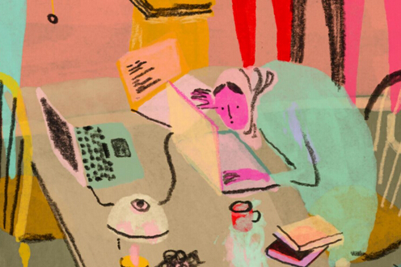

怎样新学一门技术
本文作者为CSDN博客专家 foruok，个人微信公众号：programmer_sight，作者授权CSDN社区微信公众号《程序人生》发表，转载请联系原作者。

因为公司缺一个系Web管理系统的开发，我决定挑一个技术栈来学习一下，然后自己来写。我选择了Node.js+Express+AngulaJS+MongoDB这一条技术栈，花了将近两周的时间，做了很多小demo，写了一系列博文，终于基本熟悉了Node.js、Express、AngulaJS、UI BootStrap、CSS、HTML、MongoDB、Mongoose等内容，觉得可以开始写我的Web管理系统了。
兴奋啊，让兴奋飞一会儿。
之前公司有来过一个从没做过开发的同事，在学习与实践的路上遇到一些问题。最近有一个来实习的同事，也在学习中。结合我自己的学习过程，感慨良多，遂成此文：怎样新学一门技术。
注意我的用词，是“新学一门技术”，而不是“学一门新技术”。我想强调的是再一次学习这件事，而不是强调技术是新的。因为你有得东西跟着学，就说明技术其实已经不新了。扯起淡来收不住，还是别展开了吧，下面就正经八百地来总结一下，水一水。
有很多条，我们一条一条过吧，今天没吃药，感觉萌萌的，就说到哪里是哪里了。
每一个技术栈都有存在的理由，都有最适合使用它的场景。某一个技术栈最适合解决某一类问题，你选择它有时是因为它适合解决你的问题，有时是别人觉得它适合你或者你的问题，总之你一定有个理由，也许你只是想用用不同的技术。这些都不重要，重要的是，你终于开始了学习之旅。
对于我学习基于Node.js的技术栈，有两个原因：
❶ 我以为它能轻松胜任写一个Web管理系统这类任务，而且后续还可用于后端服务
❷ Node.js + Express + AngularJS + Mongoose + MongoDB这条路，一门JavaScript基本就贯通了前端后端
我们新学一门技术，往往是为了解决用现有技术栈不太容易解决的问题。因此，很有必要了解你面临的问题，看看解决问题的关键在哪里，可能的路径由多少。然后呢，就要了解备选的技术栈能做什么、擅长做什么、有什么公司什么产品使用了它，这些产品的特点和规模与你面临的问题有没有可比性。
这一点其实和前面的“选择什么技术栈”是相辅相成的，甚至可以合并同类项。
熟悉了待解决的问题，选择了一个技术栈后，就要静下心来，进一步深入了解技术栈，看看究竟这条路上有多少技术点是必须要学的，把它们列出来，一定要列出来，这样才可以一个一个来学，不至于学着学着忘了这个漏了那个。
每一项技术，对学到什么程度也应心中有数。当然对于从未有过开发经验的人来讲，怎么讲可能都是心中忐忑忑，不过没关系，且去学就是了。后面还会讲到。
互联网时代，知识盈余，信息过量，你想学什么东西，Google或百度一下，有关联的主题成千上万，没关联的主题万儿八千，总之信息浩如烟海，而我们却如落水的蚂蚁，实在有点浩淼水面终生难渡之感。无力啊。
学过C，学过C++，学过Windows编程，学过MFC，学过Python，学过Qt，学过JavaScript，学过Java，学过Android，学过SQL，学过Node.js，学过Objective C……
对我来讲，我觉得一本好书是最好的开始，我每次新学一个东西，第一件事就是了解有什么书，而且我一定要买纸质的。所以，我的书越积越多。这次学习NEAM（Node.js+Express+AngularJS+MongoDB），我买了《Node.js+MongoDB+AngularJS Web开发》这本书，觉得挺不错的。
一本系统讲述某项技术的书，可以让你少走好多弯路，短时间觉得过程漫长，长远看却是捷径。
另外最好的资料就是某项技术的官方SDK，一般技术都有文档，API，Quick Start，Guide，Tutorial，Demo，Example……这些资料是顶好顶好的。不过我觉得结合书对照着来看效果更好。
如果能在网络上找到前辈们写的系列文章，也是蛮好的。但很多文章就是蜻蜓点水或只涉及某一细节，适合对该技术有了一定了解再去看。不过呢，现在有很多人在分享，质量高的文章确实也很多。但是呢，对新学一门技术来讲，来回寻找、判断、选择，时间成本太高。
网络上还有很多视频教程，也可以一看。
总之各种资料都会有，根据你自己的学习经验，选择最适合你的那种。

要说新学一门技术不遇到问题，鬼也不信呢。
比方说你换了技术树，原来是玩儿C的，现在改玩J2EE或者C#，能不遇到问题吗。比方说你原来玩HTML和CSS，现在改Swift……比方说……比方说……
当然也不全是技术问题，还会有心理上的问题。比如你急于看到你的问题能够三两下就解决，一旦过个三五八天你还不能用新学的技术解决实际的问题，就开始怀疑了，就不自信了，就自我否定，就打算放弃了，就有换个技术试试的想法了……我想说的是，软件开发这里，没有哪个技术你学个三两天就能用它干出点儿名堂来，两三周都难呢。所以心要静，屁股要沉，意志要坚定，把一个坑挖出水来再说。
有时可能公司或领导不给你那么多时间，但是这也不是大问题。8小时之外你还有很多时间，还有周末，总之你要是想坚持，就一定有时间，时间就一定不是问题。
也许你有个阶段会笃定“我实在理解不了掌握不了这个技术”，真的想放弃，但我想还是坚持多一秒吧，拐过这个路口就有彩虹了。
你不放弃自己，就没人能放弃你。
我们最终要做出一个什么东西，具有什么功能，解决什么问题，一定要明确下来，这样才会有稳定的目标。
宏大的远景会让人身心澎湃，会带来源源不断的动力。
只有树立明确的目标，才能进一步往下拆分出一系列细小的子目标。最好把大目标分解，列到纸上或记到电脑上，不管怎么样，记下来很重要，而且要放在容易看到的地方，每天都看看，想想，保持敏感、紧迫感、期待感。
新学一门技术，不断的小练习，持续的实践是非常重要的。每学完一个知识点，都要动手写点代码来看看效果。有时一个Hello World都让人激动不已。
每一个小的成就都会传达给你正能量，加强你的信心，都会让我们离目标近一点。
按我的经验，最好一两天就能有小的demo完成，这样刺激就会不断，High不停歇。要是你看上十天书才动手写一个demo，那可能还没到十天呢，就放弃了。
目标太远看不到产出和成长，就非常容易懈怠。即刻的成就感刺激很重要，它能推着你前进。如果你能把每个小demo都和前面从大目标拆分出的小目标结合起来，形成每一个小demo完成大目标的某一个细分小目标的话，那就太好了！
毋庸置疑，学习过程中会遇到各种问题，又因为我们是奔着解决问题而去，很多知识原本是成块的，而我们只用到某一点，或者某个技术还有很深入的内容而我们只是蜻蜓点水……
总之我们十二万分有必要记笔记。笔记也不需要那么正式，也不一定要遵循什么特定的格式，也不一定要多么美观，只要能易懂即可。
笔记可以记录下列内容：
● 学习过程中搜集的资源链接
● 遇到的未决的疑问
● 那些很宽而我们用的很窄的知识点
● 那些能进一步深入而我们浅尝辄止的知识点
● 某个功能可能存在的其它实现方案的蛛丝马迹（要知道，知道茴香豆的“茴”字有几种写法对技术人员来讲可是极好的）
待你长发及腰或者胡茬胜草，就可以回头整理你的笔记，回顾并进一步学习。这样对新学的技术的理解就会更进一步。

新学一门技术，是还走马观花好还是细嚼慢咽？
前一阵子有个哥们买了我的书《Qt Quick核心编程》，我们反反复复邮件来往了N次，他让我非常意外也非常感动。这个哥们每次邮件都会提出针对书中细节的疑问，附上拍摄的图片，从图片可以看到用手写在书上的标注，还能看到用绘图工具加的标注，我一下子就震惊了，这是多么认真对待新学一门技术这件事儿的人呢！这哥们最终指出了书中的四处有效谬误，我记录了下来，准备再次印刷时修正过来。他告诉我，他在新学技术时，书里的代码都要照着敲下来验证！
我自己在学习时，也会隔三差五跑一跑书里的代码，但绝对没有这位朋友这么认真，他让我深感惭愧。
对于初学编程的人来讲，我建议向这位朋友学习，步步为营，持续推进，不要怕慢，要求稳求细求扎实。多花些时间是值得的，良好的学习习惯养成了终身受益。
对于有经验的程序员，在新学习一门技术时，也要尽量避免走马观花，要力求落到实处。当然此时我们往往很急切地要奔向目标，也有能力判断哪些知识、技能是解决问题所必须的，可以挑着看，有针对性地学，但是，对于分拣出来的这些点，就要持初学者的虔诚态度，一步一个脚印，稳步前进。
程序员最本质的财富是自己，挖掘自己的潜能，让自己不断增值，这是最要紧的事儿。像学习技术拓宽知识领域这种事情，再怎么花钱都不过分啊。
有的朋友可能因为经济原因，在学东西时不大愿意买书、买视频、买资料、买VPN（很多技术资料都在国外站点），觉得不值当。
你像Android开发的在线文档、AngularJS的文档，在天朝基本都不能正常访问，都得翻qiang或使用VPN，但是免费的翻qiang软件就像多情公子段誉的六脉神剑时灵时不灵，来来回回找啊试啊特别浪费时间，而你买个靠谱的VPN，一年也就一两百块，非常划算。
还有就是书，有的影印版的按美元定价，折成人民币好几百，不过也是值的。知识无价。
在增值的方向上投资自己，才是最明智的。
其实新学一门技术的有两类人：
● 没有开发经验的新手
● 掌握了某种技术的人
这两类人在新学一门技术时会有不同的心理感受，也会遇到不同的问题。
对于没有开发经验的新人，进入到一个公司才开始学习开发技术，会有比较大的压力，因为什么都不懂，有时别人说的词语都理解不了，巨大的未知领域会带来巨大的压力。有些人喜欢挑战，会特别兴奋，每天都自High到不行。有些人比较容易自我否定，碰一次壁就收缩一下，碰多了就跟无花果干似的皱得不行毫无生气。
其实呢，我没学过，不知道，不会，这很正常，绝对是正常现象，不必为此忧虑，有智慧的人也不会因此看不起你，因为大家都这么过来的，没哪个家伙娘胎里蹦出来就能开发出一个App来。遇到问题少关注“别人怎么看我”、“我这么差”、“我搞不定”、“我好难受”这些负面的东西，多想怎么解决，积极尝试解决问题，这样才会越来越好越来越好。
有过项目经历的人在新学一门技术时，通常会有急于求成或错误预期这方面的问题。因为有了一定经验，就会觉得再学别的什么应该手到擒来易如反掌，往往会期待三几天就能搞出点成绩来，领导上也会有类似的期待，而实际上，这种浮躁的心态往往会导向不好的结局。你想啊，哪一项技术是那么容易的，随便搞搞就能搞定？
我2014年其实动过学习Node.js技术栈的念头，在网上看过几天资料，没搞定就放弃了，当时就是因为错误的估计了新学一门技术的难度导致心态浮躁，在预期结果没有如期到来时很容易就动摇了。
所以呢，有经验的人，新学一门技术，就要努力放空自己，让自己归零，这样会比较容易学进去，坚持下来。
你以为我是凑数的吗？重要的话说三遍，坚持很重要，所以要坚持，坚持，再坚持。这是最后的制胜法宝。
更多精彩博文，请猛戳左下角“阅读原文”吧！
移动一小步，视界大不同！
更多程序员技术交流，奇闻轶事，
欢迎扫描下面二维码下载CSDN Android、iOS移动客户端。